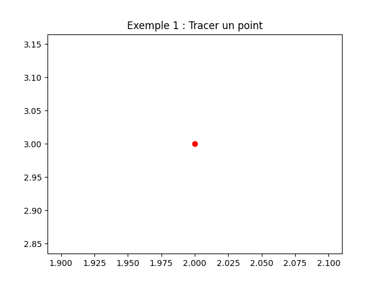
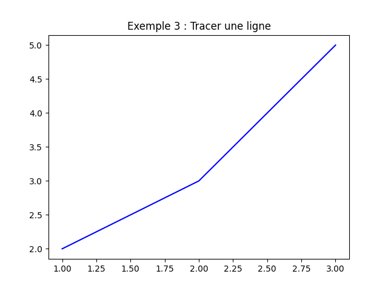
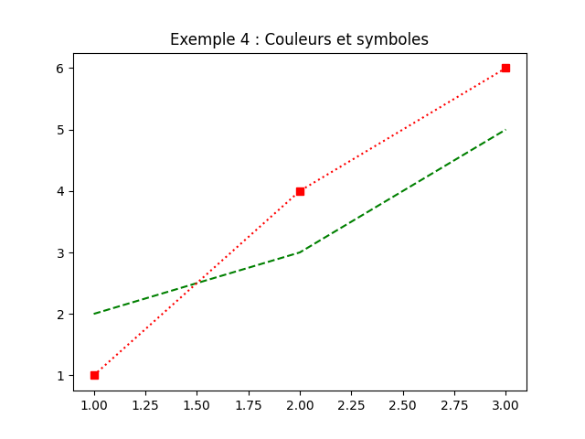
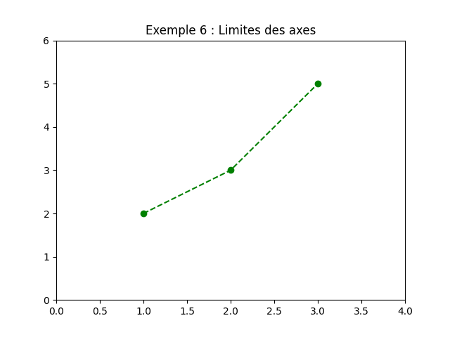
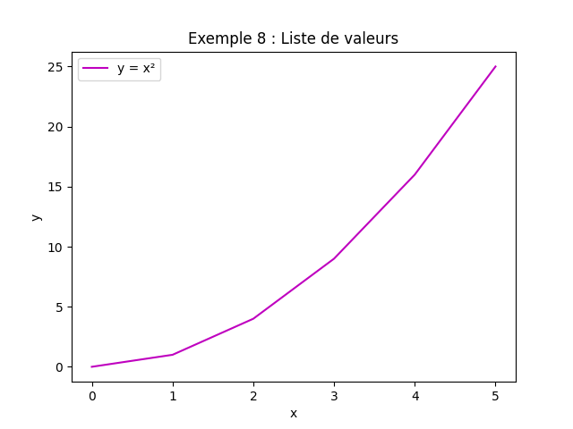
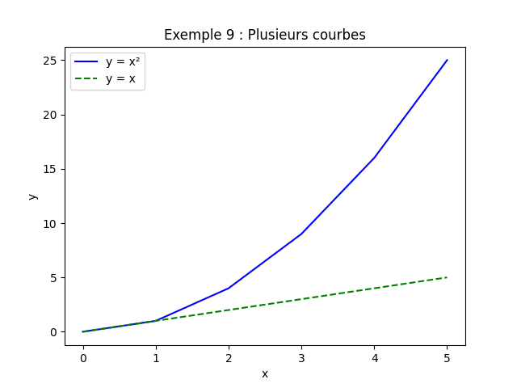
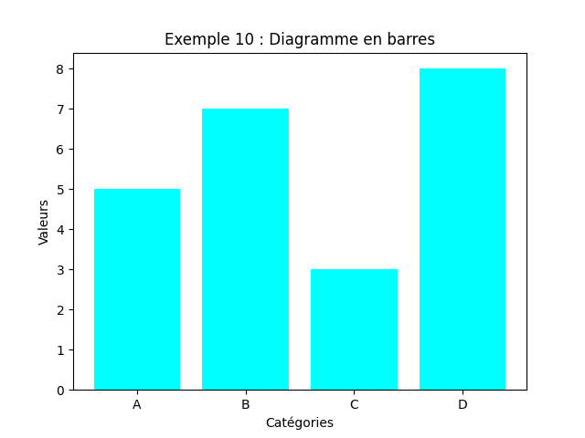
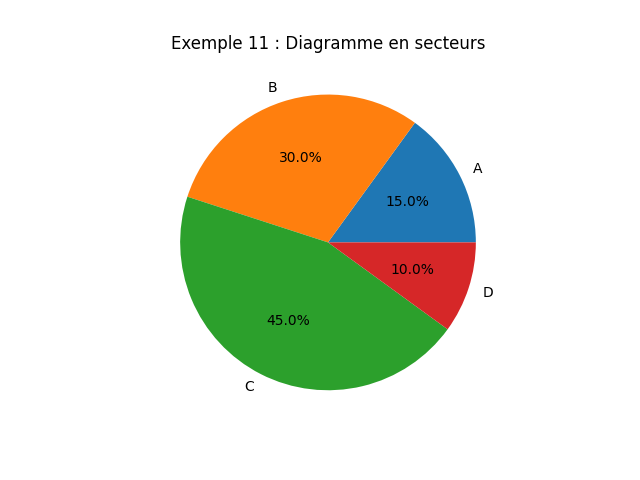
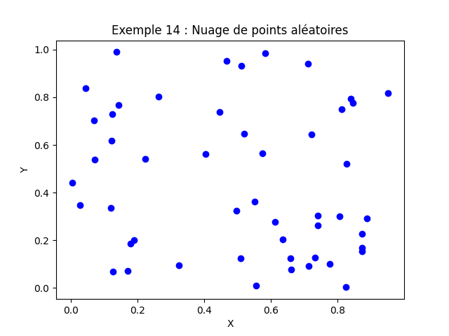

2. Introduction à matplotlib.pyplot¶
matplotlib.pyplot est un module de matplotlib qui fournit une interface simple pour créer des graphiques 2D. Il
est particulièrement utile pour visualiser des données de manière claire et esthétique.
1. Installation et importation¶
Assurez-vous d’avoir installé matplotlib :
Importez le module pyplot (généralement abrégé en plt) :
2. Diagrammes simples avec des points fixes¶
2.1 Tracer un point¶
plot(x, y, format): Trace un point aux coordonnées(x, y).format: Chaîne de caractères définissant la couleur et le symbole (ex. :'ro'pour un cercle rouge).

2.2 Tracer plusieurs points¶
plt.plot(1, 2, 'bo') # Point bleu
plt.plot(2, 3, 'go') # Point vert
plt.plot(3, 5, 'mo') # Point magenta
plt.show()
 ¶
¶
2.3 Tracer une ligne entre des points¶
'b-': Ligne bleue (bpour blue,-pour une ligne continue).

3. Personnalisation des points et des lignes¶
3.1 Couleurs et symboles¶
Voici quelques options pour les couleurs et les symboles :
| Couleur | Symbole | Style de ligne |
|---|---|---|
'b' (bleu) |
'.' (point) |
'-' (ligne continue) |
'g' (vert) |
'o' (cercle) |
'--' (ligne tirets) |
'r' (rouge) |
's' (carré) |
':' (ligne en pointillés) |
'c' (cyan) |
'*' (étoile) |
'-.' (ligne point-tiret) |
'm' (magenta) |
'x' (croix) |
Exemple :
plt.plot([1, 2, 3], [2, 3, 5], 'g--') # Ligne tiret verte
plt.plot([1, 2, 3], [1, 4, 6], 'rs:') # Carrés rouges reliés par une ligne en pointillés
plt.show()
¶
3.2 Ajouter des étiquettes et un titre¶
plt.plot([1, 2, 3], [2, 3, 5], 'bo-') # Ligne bleue avec des cercles
plt.xlabel("Axe X") # Étiquette de l'axe X
plt.ylabel("Axe Y") # Étiquette de l'axe Y
plt.title("Exemple 5 : Étiquettes et titre") # Titre du graphique
plt.show()
 ¶
¶
3.3 Modifier les limites des axes¶
plt.plot([1, 2, 3], [2, 3, 5], 'go--')
plt.xlim(0, 4) # Limites de l'axe X : de 0 à 4
plt.ylim(0, 6) # Limites de l'axe Y : de 0 à 6
plt.show()
¶
3.4 Ajouter une légende¶
plt.plot([1, 2, 3], [2, 3, 5], 'bo-', label="Série 1") # Ajout d'une légende
plt.plot([1, 2, 3], [1, 4, 6], 'rs:', label="Série 2")
plt.legend() # Affiche la légende
plt.show()
 ¶
¶
4. Diagrammes avec des listes de valeurs¶
4.1 Tracer une courbe à partir de listes¶
x = [0, 1, 2, 3, 4, 5]
y = [0, 1, 4, 9, 16, 25] # y = x²
plt.plot(x, y, 'm-', label="y = x²")
plt.xlabel("x")
plt.ylabel("y")
plt.title("Fonction quadratique")
plt.legend()
plt.show()
¶
4.2 Tracer plusieurs courbes¶
x = [0, 1, 2, 3, 4, 5]
y1 = [0, 1, 4, 9, 16, 25] # y = x²
y2 = [0, 1, 2, 3, 4, 5] # y = x
plt.plot(x, y1, 'b-', label="y = x²")
plt.plot(x, y2, 'g--', label="y = x")
plt.xlabel("x")
plt.ylabel("y")
plt.title("Comparaison de fonctions")
plt.legend()
plt.show()
¶
4.3 Diagramme en barres¶
categories = ["A", "B", "C", "D"]
valeurs = [5, 7, 3, 8]
plt.bar(categories, valeurs, color='cyan') # Diagramme en barres
plt.xlabel("Catégories")
plt.ylabel("Valeurs")
plt.title("Diagramme en barres")
plt.show()
¶
4.4 Diagramme en secteurs (camembert)¶
categories = ["A", "B", "C", "D"]
valeurs = [15, 30, 45, 10]
plt.pie(valeurs, labels=categories, autopct='%1.1f%%') # Diagramme en secteurs
plt.title("Répartition des valeurs")
plt.show()
¶
5. Diagrammes avec des tableaux de données¶
5.1 Utiliser des tableaux NumPy¶
import numpy as np
x = np.linspace(0, 2 * np.pi, 100) # 100 valeurs entre 0 et 2π
y = np.sin(x) # y = sin(x)
plt.plot(x, y, 'r-', label="sin(x)")
plt.xlabel("x")
plt.ylabel("sin(x)")
plt.title("Fonction sinus")
plt.legend()
plt.show()
 ¶
¶
5.2 Tracer plusieurs courbes avec des tableaux¶
x = np.linspace(0, 2 * np.pi, 100)
y1 = np.sin(x)
y2 = np.cos(x)
plt.plot(x, y1, 'b-', label="sin(x)")
plt.plot(x, y2, 'g--', label="cos(x)")
plt.xlabel("x")
plt.ylabel("Valeurs")
plt.title("Fonctions sinus et cosinus")
plt.legend()
plt.show()
 ¶
¶
5.3 Diagramme de dispersion (scatter plot)¶
x = np.random.rand(50) # 50 valeurs aléatoires entre 0 et 1
y = np.random.rand(50)
plt.scatter(x, y, color='blue', marker='o') # Diagramme de dispersion
plt.xlabel("X")
plt.ylabel("Y")
plt.title("Nuage de points aléatoires")
plt.show()
¶
5.4 Personnalisation avancée¶
x = np.linspace(0, 10, 100)
y1 = np.sin(x)
y2 = np.cos(x)
plt.plot(x, y1, 'b-', linewidth=2, label="sin(x)") # Épaisseur de la ligne
plt.plot(x, y2, 'g--', linewidth=2, label="cos(x)")
plt.xlabel("x", fontsize=12) # Taille de la police
plt.ylabel("y", fontsize=12)
plt.title("Fonctions trigonométriques", fontsize=14)
plt.grid(True) # Ajouter une grille
plt.legend(fontsize=10)
plt.show()
 ¶
¶
5.5 Sous-graphiques (subplots)¶
x = np.linspace(0, 2 * np.pi, 100)
y1 = np.sin(x)
y2 = np.cos(x)
# Créer 2 sous-graphiques côte à côte
fig, (ax1, ax2) = plt.subplots(1, 2, figsize=(10, 4)) # 1 ligne, 2 colonnes
ax1.plot(x, y1, 'b-')
ax1.set_title("sin(x)")
ax1.set_xlabel("x")
ax1.set_ylabel("sin(x)")
ax2.plot(x, y2, 'r--')
ax2.set_title("cos(x)")
ax2.set_xlabel("x")
ax2.set_ylabel("cos(x)")
plt.tight_layout() # Ajuste l'espacement entre les sous-graphiques
plt.show()